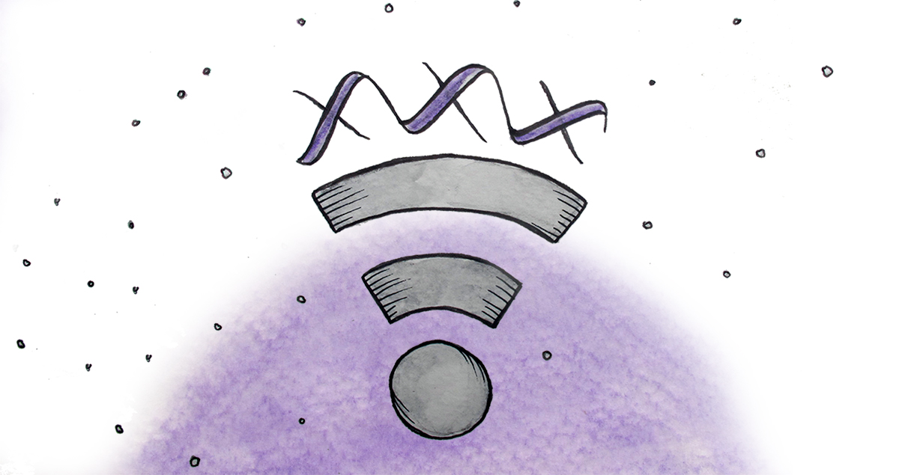

My sex life is being used against me.
Sex is intertwined with technology. We sext, send nudes, record videos, watch pornography: sexual content constantly flows through our digital devices. Sexual intimacy depends on respect and trust, online or off. Sending sexual content is never an obligation—it's a personal choice, informed by safe discussions about what you're comfortable sending or receiving. In contrast, a controlling partner may aggressively demand sexual content from you. They might argue that it's "normal" in a relationship, or they might "sex shame" you for being hesitant. In other situations, a controlling partner might threaten you if their demands are not met: they will withhold intimacy, cut off access to resources, or force unwanted sexual acts.
Sexual content is incredibly difficult to control once it's made. Screenshots allow intimate materials to be easily duplicated, even if the original is deleted. Social media, forums, and pornography websites readily share sexual content without concern for consent. Many people, especially men, see "no big deal" in sharing their partner's sexual media amongst friends. The unfortunate reality is that unless you are the sole owner of your sexual content, you cannot force it to stay private. Only mutual trust between yourself and your partner, reinforced with cybersecurity strategies, can protect your private media. Whether it was created consensually or it was coerced, you still have a right to privacy.
I'm afraid of my sexual content being hacked.
When you create a sext, a nude, or a video, it lives in a number of places:
- As a file on your phone or computer.
- In the apps that have access to your files.
- In the cloud or other backup solutions.
- Websites it's shared.
Protecting your device
 Anyone with passwords to your cell phone or computer can access your sexual content. Use a unique passphrase, like "PurpleDishwasherPotato", so you are less likely to be hacked. On a phone, a 6+ digit passcode will prevent someone from picking up your phone and digging around. Our Protect Your Passwords defense strategy explores how you can fortify your passwords.
Anyone with passwords to your cell phone or computer can access your sexual content. Use a unique passphrase, like "PurpleDishwasherPotato", so you are less likely to be hacked. On a phone, a 6+ digit passcode will prevent someone from picking up your phone and digging around. Our Protect Your Passwords defense strategy explores how you can fortify your passwords.
Protecting your apps
There's no app that's 100% secure when sharing sexual content. "Short-lived" apps like Snapchat may seem private, but it's very easy for your partner to take screenshots or install software to record content. Be aware of app permissions: if there's an app where you wouldn't want your content to be accessed, either delete the content, or disable permissions for the app. For instance, if you have intimate photos, you don't want it being available to a silly video game app.
You can mitigate risk by choosing apps that do not back-up to the cloud, do not share across devices, and require a password. The texting app Signal on iOS and Android is a great choice: your messages and photos are encrypted so only you and your recipient can access them. You can configure Signal so it requires its own password. You can delete whole conversations (though your recipient may preserve the content in some way). Because there's no cloud, you don't have to worry about your messages being hacked or leaked. Compared to the standard texting apps, Signal is far more secure, though it's not fool-proof.
Protecting your cloud
It's likely that your text messages, photos, and videos are automatically backed-up in the cloud. Deleting them on your device doesn't guarantee that they are deleted in the cloud. When creating sexual content, try to use apps that don't back-up to the cloud, or have back-ups disabled. Securing your cloud with a strong password, as described in the Protect Your Passwords defense strategy, will reduce the risk of your cloud being hacked. Two-Factor Authentication, another one of our defense strategies, offers even more security.
Protecting your websites
As soon as you share sexual content on a website, whether it's an email provider, a forum, or a dating website, someone else can share it. You have to trust that the website won't be hacked, that its employees won't secretly view users' content, and that they won't sell your data at a later time. It's notoriously difficult to stop the spread of sexual content on pornography websites, as users and rival websites routinely download and distribute the content. You can secure your website account, which at least prevents a malicious person from easily gaining access to what you've shared. The Protect Your Passwords and Two-Factor Authentication defense strategies are, again, your best options. You should also delete old website accounts that you're not using, especially if you've been re-using passwords.
My partner is sharing pornography of me online
There are countless websites dedicated to sharing amateur pornography: rarely is anyone asked whether the involved parties consented to distribution. Some websites, like "revenge porn" websites, explicitly encourage content that was shared without consent. This practice is highly illegal and immoral. There are many reasons why your partner may take this risk: to damage your reputation, to reinforce a sense of a power, to coerce you into contacting them, or because they find it sexually gratifying. Regardless of the reason, it is unacceptable, full-stop.
It's difficult to know whether your sexual content has been maliciously shared online. Searching popular pornography websites can be a deeply triggering process, while the sheer volume of websites makes it nearly impossible to search them all. It's not your obligation to search for your content on the internet—it's your partner's responsibility not to share that content in the first place.
If you find your sexual content being shared on a website, first collect evidence; sharing pornogrpahy non-consensually violates civil law in every state in the U.S., so evidence is crucial if you decide to pursue legal action. Then, contact the website about taking down the content. WithoutMyConsent, a non-profit that fights invasions of privacy, offers in-depth resources for collecting evidence, removing content, and pursuing legal action.
Conclusion
While cell phones and the internet offer an astonishing number of ways to be sexual online, you can take steps to protect your sexts, nudes, and videos from being weaponized. Establishing boundaries and trust with a partner is crucial if you feel safe doing so. Securing your electronic devices, apps, cloud, and websites can reduce the risk of someone maliciously accessing your private content. Should your sexual content be shared online without your consent, you can take steps to remove the content from the platforms. While there's no guaranteed way to totally secure your intimate data, you still have an enduring right to privacy.